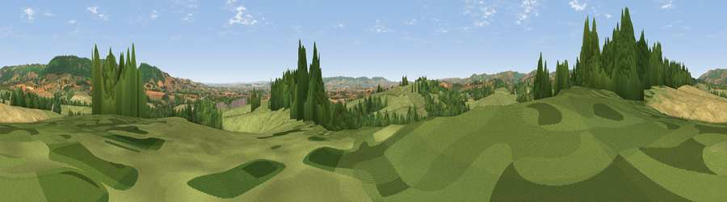

Viewpoint near Combe Florey
#14045 in England · top 32% of its area beats it · near Combe FloreyWhere it is
The exact computed spot (ST 13875 30925). Click the marker for map links.
The view, rendered

A 360° render of this exact spot computed from the terrain model, tree cover and land cover — summer colours, afternoon light, calibrated against photographs of famous viewpoints. Real trees, hedges and buildings will differ in detail.
The panorama
Grey silhouette: terrain skyline in each direction (720 bearings, Earth curvature and refraction included). Dashed green: skyline with trees (+15 m) and buildings (+8 m) as obstacles. Blue strip: how far the ground is visible on each bearing.
Where the view opens
Wedge length = distance to the farthest visible ground on that bearing (vegetation-aware). Rings at 10, 25 and 50 km.
What fills the view
51% grassland · 26% woodland · 22% cropland ·
Angular shares of the visible panorama (visual magnitude), not map area. Landscape diversity 0.46 (0–1 Shannon).
Key numbers
More beautiful places nearby
The staircase of upgrades: each row has a higher view potential than everything closer. Driving times are estimates from straight-line distance, calibrated against real road routing — check an actual route before setting out.
| Place | Direction | Drive | Score |
|---|---|---|---|
| Viewpoint near Combe Florey | SE · 1 km | ~2 min | 62.6 |
| Viewpoint near Ash Priors | SSW · 1 km | ~4 min | 65.9 |
| Viewpoint near West Bagborough | NNE · 5 km | ~11 min | 84.6 |
| Wills Neck | NNE · 5 km | ~11 min | 85.7 |
| Viewpoint near Holford | N · 10 km | ~19 min | 85.9 |
| Viewpoint near West Quantoxhead | N · 10 km | ~20 min | 87.8 |
| Viewpoint near West Quantoxhead | N · 11 km | ~21 min | 88.7 |
| Holdstone Hill | WNW · 54 km | ~76 min | 90.2 |
51.07117, -3.23063 · source: screening · position refined by local search. Computed location — check access rights before visiting.